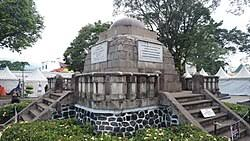
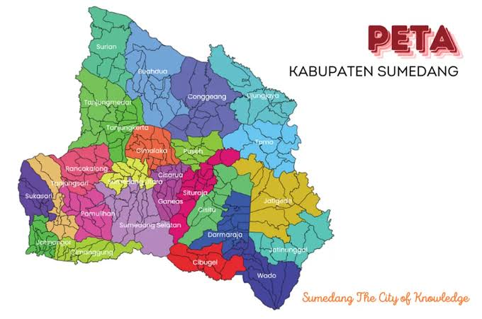
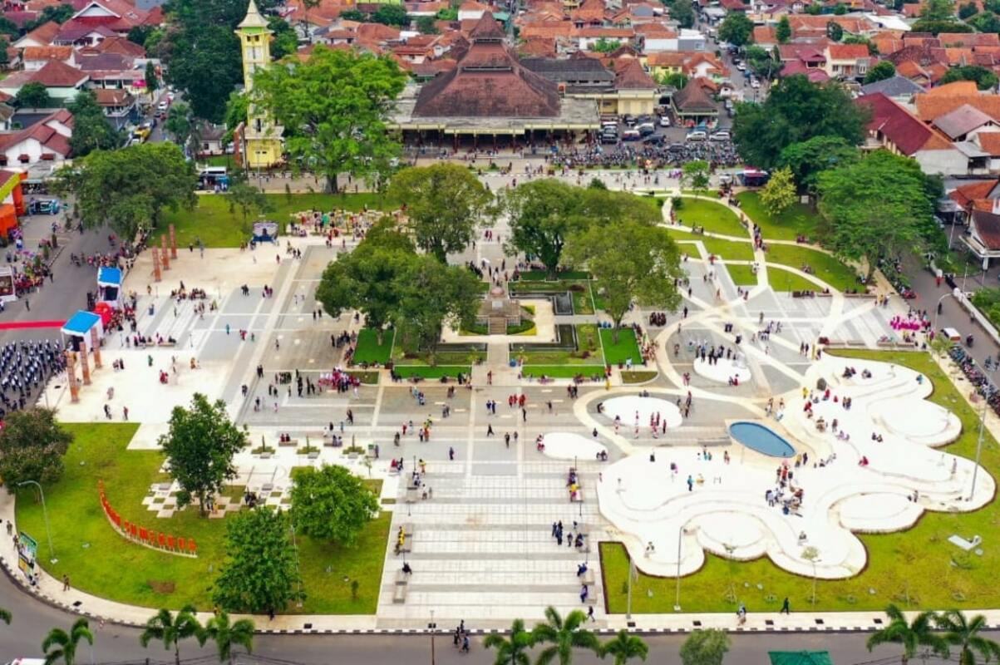

Sejarah

Sumedang berakar dari Kerajaan Tembong Agung yang didirikan oleh
Prabu Guru Aji Putih pada abad ke-12, sebelum akhirnya diubah menjadi
Kerajaan Sumedang Larang oleh putranya, Prabu Tadjimalela,
yang melahirkan filosofi "Insun Medal Insun Madangan" (Aku Lahir, Aku Menerangi).
Kerajaan ini mencapai puncak kejayaannya di bawah pimpinan Prabu Geusan Ulun
pada akhir abad ke-16, di mana wilayah kekuasaannya meluas hampir ke seluruh Jawa Barat
setelah menerima legitimasi sebagai penerus takhta Kerajaan Sunda (Pajajaran) melalui penyerahan Mahkota Binokasih.
Seiring runtuhnya Pajajaran dan menguatnya pengaruh Kesultanan Mataram serta kolonial Belanda,
Sumedang bertransisi menjadi kadipaten (kabupaten) dengan hari jadi resmi yang disepakati jatuh pada tanggal 22 April 1578.
Geografis

Kabupaten Sumedang adalah sebuah wilayah di Provinsi Jawa Barat yang secara geografis
berada pada koordinat 6°34'46,18”–7°00'56,25" Lintang Selatan dan 107°01'45,63”–108°12'59,04" Bujur Timur. Wilayah seluas 1.558,72 km²
ini berbatasan langsung dengan Kabupaten Indramayu di utara, Kabupaten Majalengka di timur, Kabupaten Garut dan Bandung di selatan,
serta Kabupaten Subang di bagian barat laut. Posisi ini menempatkan Sumedang sebagai koridor darat yang sangat strategis karena membelah
jalur perlintasan utama dari arah Kota Bandung menuju wilayah Cirebon dan sekitarnya.
Kondisi topografi Sumedang didominasi oleh bentang alam perbukitan dan pegunungan dengan elevasi berkisar antara 25 hingga 1.667 meter di atas permukaan laut (mdpl).
Bagian utara kabupaten ini umumnya berupa dataran rendah, sedangkan kawasan tengah hingga selatan dikelilingi oleh dataran tinggi dan pegunungan terkenal seperti Gunung Tampomas.
Struktur morfologi yang berbukit-bukit ini tidak hanya menciptakan tanah yang subur untuk komoditas agrikultur unggulan seperti Ubi Cilembu, tetapi juga membentuk tantangan tersendiri
berupa kerawanan terhadap bencana tanah longsor di beberapa titik kecamatannya.
Wisata
Kabupaten Sumedang menyajikan ragam destinasi wisata yang semakin populer dan mudah diakses berkat dibukanya jalur Tol Cisumdawu. Mulai dari wisata bukit kekinian, keindahan alam waduk,
hingga wisata edukasi sejarah, Sumedang menjadi tujuan favorit baik bagi keluarga maupun pelancong yang ingin menikmati udara sejuk khas pegunungan.
Sumedang kota tahu

Memiliki beberapa salah satu kabupaten di Provinsi Jawa Barat yang
terkenal dengan Tahu Sumedang. Selain kulinernya, Sumedang juga memiliki
kekaya budaya, sejarah, dan berbagai tempat wisata seperti Jatigede,
kampung Toga, serta Museum Prabu Geusan Ulun.
Alun-Alun Sumedang

Alun-alun secara umum berfungsi sebagai pusat aktivitas warga, ruang terbuka hijau,
sekaligus simbol pusat pemerintahan dan budaya daerah. Di kawasan ini, masyarakat biasanya berolahraga,
bersantai, atau menikmati berbagai wahana permainan anak. Selain menjadi pusat jajanan kaki lima dan kuliner khas setempat,
alun-alun tradisional di Jawa umumnya memiliki tugu ikonik di tengahnya serta dikelilingi bangunan penting seperti Masjid Agung dan pendopo bupati.